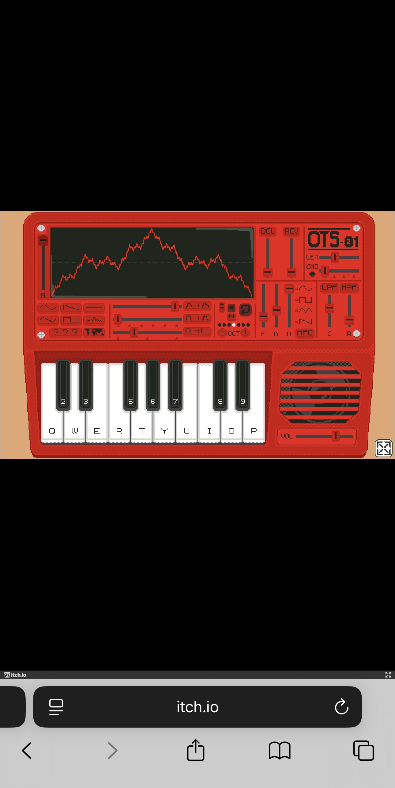
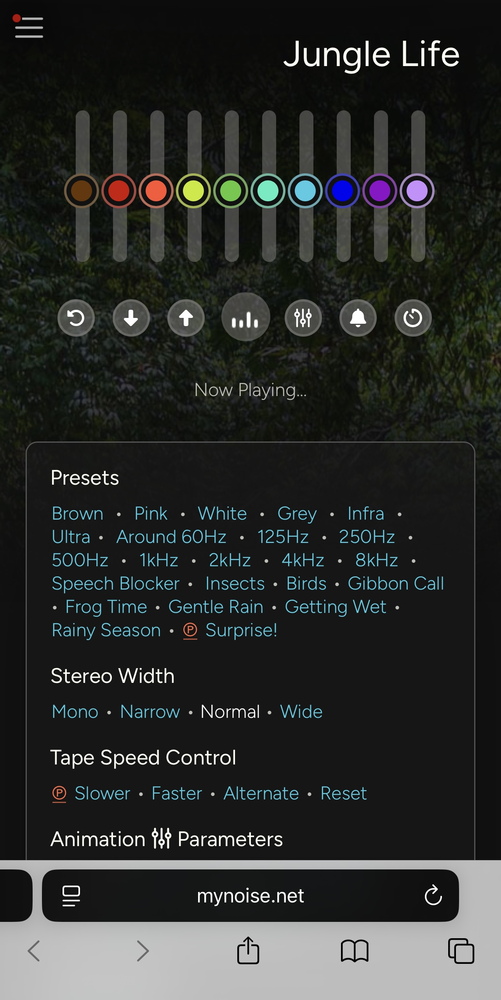
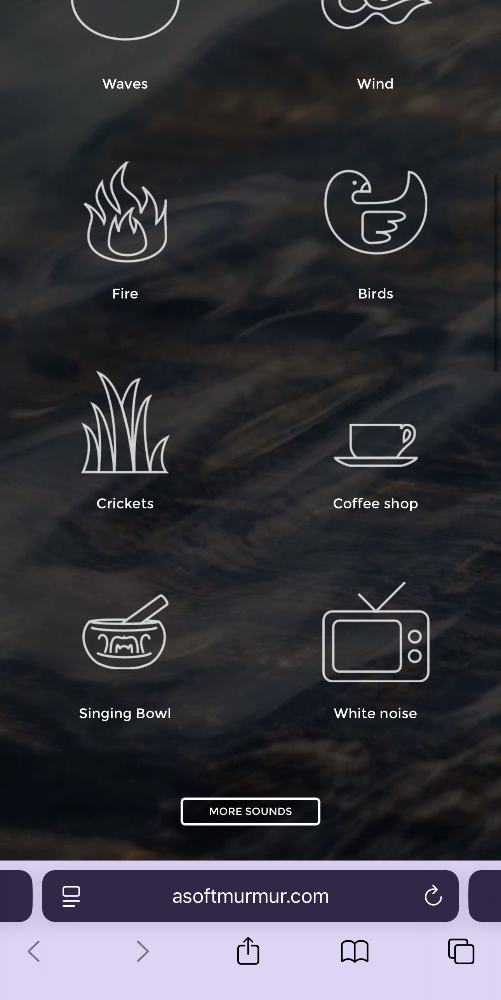
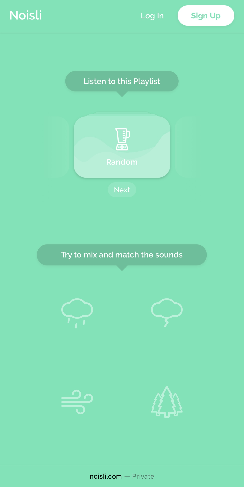

Included
- Layered ambient sounds
- Simple volume controls for each sound
- Different atmosphere or mood options
- A minimal study mode
- Continuous audio playback
- Controlled random variation
- Immediate audio feedback when settings are changed
Assignment 1 - System Design Document
A browser-based dynamic soundscape designed to support studying and focused work.
01
I chose Scenario 5: Dynamic Soundtrack-er, which asks for a browser-based instrument that creates an ongoing soundtrack for a particular activity or environment.
I interpreted this scenario as an opportunity to design a soundtrack for studying and focused work. When studying for a long period, listening to the same short audio loop can become repetitive, while frequently changing songs or playlists can become another distraction. I wanted to explore a sound environment that changes subtly by itself while still giving the user some control over what they hear.
The purpose of the project is to allow users to create and adjust an evolving background soundtrack that supports concentration without requiring constant interaction.
The main values of the project are calmness, personalisation and low distraction. Users should have enough control to create a sound environment that suits them, but the interface should become less demanding once they begin studying.
02
FocusScape is a browser-based audio instrument for creating personalised background soundscapes while studying. Instead of choosing and playing a fixed song, users build an atmosphere from several sound layers.
A user could begin by choosing an environment such as rain, café, ocean, forest or night. They could then combine sounds such as rain, wind, café ambience or soft musical textures and adjust the volume of each layer.
The soundtrack would continue to evolve after the user starts their study session. Small details could appear at different times and some layers could change slightly in intensity. These changes would be subtle so that the soundtrack feels less repetitive without becoming distracting.
FocusScape responds to the scenario's purpose by providing an ongoing soundtrack that can continue changing without frequent user input. It responds to its worth by keeping the experience calm, personal and simple enough to remain in the background while the user works.
03
FocusScape will be designed as a simple browser-based audio instrument rather than a full music streaming or professional music production platform. This keeps the project centred on concentration and ambient listening.
The extended technique I propose to use is randomisation through
Math.random(). It could be used to decide when small changes
happen in the soundtrack, such as the appearance of an ambient detail or a
slight change in the intensity of a sound layer.
Randomness would be kept within controlled limits. Sudden or extreme changes could interrupt concentration, so FocusScape would only use subtle variation. This should make the soundscape feel more natural and less repetitive while maintaining the calm character of the project.
04
I analysed four browser-based audio interfaces. Each example focuses on a different aspect of interaction design and helped define how FocusScape should work.
Provided UI — Feedback

OTS-01 is a browser-based virtual toy synthesizer that allows users to draw and edit sound waves and immediately hear the result. It also provides tooltips that explain the functions of its controls.
The strongest part of the interface for my project is its feedback. There is a clear relationship between changing something in the interface and hearing how that change affects the sound. This makes experimentation easier because the user does not need to predict the result before interacting.
This influenced FocusScape by showing the importance of immediate audio feedback. When a user adds a sound layer or adjusts its volume, they should hear the change straight away. This would make the soundscape easier to build through listening rather than through complicated settings.
Provided UI — Information Design

The Ultimate Jungle Noise Generator by myNoise creates a continuous natural soundscape from multiple audio elements. Users can adjust the balance of the sound rather than only listening to one fixed recording.
I looked at this interface mainly through information design. A soundscape can contain many individual elements, so the interface needs a clear way to show which elements can be adjusted without turning the experience into complicated professional audio software.
For FocusScape, I would keep the sound controls grouped into a small number of clear layers. Users would be able to personalise their environment, but only the controls that are useful for studying would be shown.
Independent Research — Purpose and Simplicity

A Soft Murmur is an online background noise generator designed for activities such as focusing and relaxing. Its main interaction is based around choosing and combining ambient sounds.
I focused on its purpose and simplicity. The main task is easy to understand and users do not need to learn a complex workflow before they can begin creating a sound environment. This is useful for an interface that is supposed to support another activity rather than become the user's main focus.
For FocusScape, I would keep the main controls limited to atmosphere, sound layers and volume. Users should be able to set up a soundscape quickly and then return their attention to studying.
Independent Research — Characterisation

Noisli allows users to combine background sounds to create an audio environment for activities including work, study and relaxation. Its presentation connects ambient sound with focus and productivity rather than treating it only as entertainment.
I analysed Noisli through characterisation. The interface communicates a calm and functional character that supports an activity happening outside the website. The sound is important, but the interface does not need to continuously demand attention from the user.
This influenced FocusScape's character. I want it to feel like a quiet study companion rather than a music player. After a session begins, unnecessary controls could be reduced so the soundtrack remains present without competing with the user's work.
05